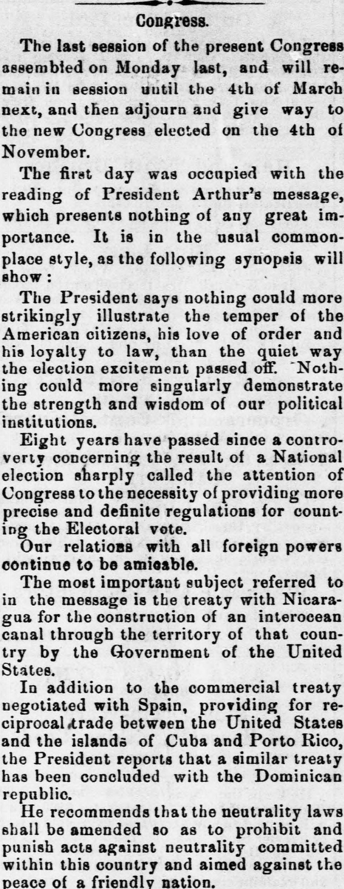
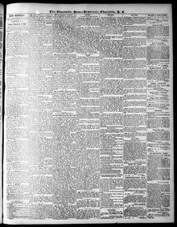

In addition to the commercial treaty negotiated with Spain, providing for reciprocal trade between the United States and the islands of Cuba and Porto RicoAdemás del tratado comercial negociado con España, que establece
Charlotte Home and Democrat. Charlotte, N.C., December 5, 1884. Page 3. Published by J.P. Strong. A weekly newspaper, 1881–1887.Charlotte Home and Democrat. Charlotte, N.C., 5 de diciembre de 1884. Página 3. Publicado por J.P. Strong. Periódico semanal, 1881–1887. View the originalVer el original


See the full pageVer la página completaThe newspaper reported that the President announced the conclusion of a commercial treaty with the Dominican Republic providing for reciprocal trade, similar to one negotiated with Spain for Cuba and Porto Rico. Additionally, the President recommended amending neutrality laws, encouraging the American steamship marine through government subsidies, and restoring the navy's efficiency. The excerpt also detailed federal financial figures, including decreases in expenditures, aggregate receipts, and customs revenue compared to the previous fiscal year.El diario refirió que el mandatario anunció el ajuste de un tratado comercial con la República Dominicana que pactaba un intercambio recíproco, análogo al estipulado con España respecto a Cuba y Puerto Rico. Recomendó asimismo el dignatario perfeccionar las leyes de neutralidad, fomentar la marina mercante de vapor nacional mediante subsidios federales y restablecer la capacidad operativa de la armada. El fragmento desglosó por añadidura cifras de las finanzas federales, reflejando mermas en los egresos, los ingresos globales y la recaudación aduanera frente al ejercicio precedente.
FULL TEXT:TEXTO COMPLETO:
Congress.Congreso.
The last session of the present Congress assembled on Monday last, and will remain in session until the 4th of March next, and then adjourn and give way to the new Congress elected on the 4th of November.La última sesión del presente Congreso se reunió el lunes pasado, y permanecerá en sesión hasta el 4 de marzo próximo, y entonces se levantará y dará paso al nuevo Congreso elegido el 4 de noviembre.
The first day was occupied with the reading of President Arthur's message, which presents nothing of any great importance. It is in the usual common-place style, as the following synopsis will show:El primer día fue ocupado con la lectura del mensaje del presidente Arthur, que no presenta nada de gran importancia. Está en el estilo común usual, como mostrará la siguiente sinopsis:
The President says nothing could more strikingly illustrate the temper of the American citizens, his love of order and his loyalty to law, than the quiet way the election excitement passed off. Nothing could more singularly demonstrate the strength and wisdom of our political institutions.El Presidente dice que nada podría ilustrar más notablemente el temperamento de los ciudadanos estadounidenses, su amor por el orden y su lealtad a la ley, que la manera tranquila en que pasó la excitación de la elección. Nada podría demostrar más singularmente la fuerza y sabiduría de nuestras instituciones políticas.
Eight years have passed since a controversy concerning the result of a National election sharply called the attention of Congress to the necessity of providing more precise and definite regulations for counting the Electoral vote.Ocho años han pasado desde que una controversia concerniente al resultado de una elección Nacional llamó vivamente la atención del Congreso a la necesidad de proveer regulaciones más precisas y definidas para contar el voto Electoral.
Our relations with all foreign powers continue to be amicable.Nuestras relaciones con todas las potencias extranjeras continúan siendo amistosas.
The most important subject referred to in the message is the treaty with Nicaragua for the construction of an interocean canal through the territory of that country by the Government of the United States.El asunto más importante referido en el mensaje es el tratado con Nicaragua para la construcción de un canal interoceánico a través del territorio de ese país por el Gobierno de los Estados Unidos.
In addition to the commercial treaty negotiated with Spain, providing for reciprocal trade between the United States and the islands of Cuba and Porto Rico, the President reports that a similar treaty has been concluded with the Dominican republic.Además del tratado comercial negociado con España, que provee comercio recíproco entre los Estados Unidos y las islas de Cuba y Puerto Rico, el Presidente reporta que un tratado similar ha sido concluido con la república dominicana.
He recommends that the neutrality laws shall be amended so as to prohibit and punish acts against neutrality committed within this country and aimed against the peace of a friendly nation.Recomienda que las leyes de neutralidad sean enmendadas de modo que prohíban y castiguen actos contra la neutralidad cometidos dentro de este país y dirigidos contra la paz de una nación amiga.
This collection gathers the coverage of the Dominican Republic in the American press, in the order it was published.Esta colección reúne la cobertura de la República Dominicana en la prensa estadounidense, en el orden en que se publicaron.